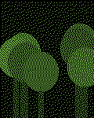
anima :: Veda a technológie
:: 12.10.
6 new
Prehľad troch štúdií z Viedne a Barcelony: koľko stupňov ušetrí jeden vzrastlý javor, koľko stojí jeho údržba, a prečo to radnice aj tak počítajú zle. Plus mapa ulíc, kde by stromy pomohli najviac.
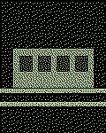
električka do Petržalky: prvý mesiaccín :: Politika :: 12.10.Ráno plná, večer poloprázdna a nikto nevie, prečo nejazdí po desiatej. Tri dni som počítal cestujúcich na štyroch zastávkach, výsledky sú v tabuľke nižšie. Spoiler: autobusy, ktoré mali zrušiť, jazdia stále a sú prázdne.
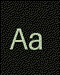
Atkinson Hyperlegible: písmo pre všetkých?lastovička :: Photo & Visual :: 12.10.Font, ktorý vznikol pre slabozrakých, a zrazu ho chce každý redizajn vrátane jedného nemenovaného. Je to dobré písmo, alebo len dobrý príbeh? Porovnal som ho s Verdanou a Tahomou na rovnakom texte, obrázky vo vlákne.
 hmla nad Dunajomdrienka :: ::graphics::design::photo :: 12.10.
hmla nad Dunajomdrienka :: ::graphics::design::photo :: 12.10.Šiesta ráno z Apollo mosta, dvadsať minút čakania na správne svetlo a jedna fotka, kým sa hmla zdvihla. Studené ruky, analóg, Portra 400. Nabudúce idem z druhej strany, ak niekto chce ísť so mnou, ozvite sa.
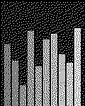
Kyberia session 2026: zostava, miesto, lístkypolly :: Hudba :: 11.10. 31 newSobota 8. novembra, Bratislava, klub pri Dunaji. Štyri live sety, jeden DJ na záver a tentokrát aj šatňa, sľubujem. Vstup pre kyberiánov za dobrovoľný príspevok, výťažok ide na server. Do diskusie píšte, kto ide, kto hrá a kto potrebuje odvoz z Trnavy.
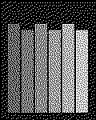
„za účelom“ musí zomrieťkremeň :: Filozofia, text & jazyk :: 11.10. 4 newZbierka najhorších úradných fráz za tento týždeň. Víťaz: „v rámci zabezpečenia realizácie“, tesne za ním „predmetná vec“. Každý piatok vyberieme jednu a preložíme ju do ľudskej reči. Prispievajte, ale bez mien a bez fotiek úradníkov.
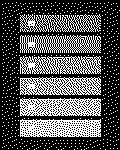
X230 v roku 2026k22 :: Ostatné :: 11.10.Nová batéria, SSD, coreboot a klávesnica zo staršieho modelu. Stále najlepšia klávesnica, akú som kedy mal, a vážim si ju viac, než by som mal. Displej je zlý, váha je zlá, a aj tak ho nevymením.
- Čo čítame v októbriode :: L:teratúra :: 10.10.
Mesačné vlákno. Jedna kniha, dve vety prečo, žiadne spoilery bez varovania. Minulý mesiac vyhral Hrabal, predminulý Tokarczuk, takže stredná Európa vedie. Kto prečíta niečo z iného kontinentu, dostane čestné K.
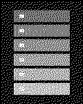
Self-hosting v roku 2026: čo nám beží domalemur :: Compz & Net :: 09.10.Zdieľajte setup: hardvér, čo na ňom beží, koľko to žerie zo zásuvky, a jedna vec, ktorú by ste dnes urobili inak. Ja začínam: starý Thinkpad, Nextcloud, Jellyfin a záložný disk, ktorý som raz za rok zabudol pripojiť.
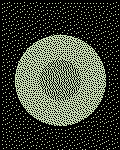
najlepší langoš na Slovenskukvasar :: Halušky :: 09.10.Hlasujte v komentároch, jeden hlas na človeka, cesnak je povinný. Zlaté piesky sa nerátajú, tam sme boli všetci a všetci vieme, ako to skončilo. Víťaza navštívime spoločne, termín dohodneme podľa počasia.
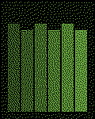
november: Wittgenstein, Tractatushmlovina :: Filozofia, text & jazyk :: 06.10.Čítame po kapitolách, stretnutie každý štvrtok o ôsmej online, odkaz pošlem mailom. Netreba nič vedieť vopred, stačí text a trpezlivosť. Čo sa nedá povedať, o tom treba mlčať, ale v diskusii to neplatí.
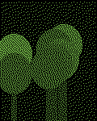
Záhrada na balkóne: zelená stena za 40 eurlemur :: Hobby a voľný čas :: 03.10.Paleta z bazáru, geotextília, kvapková závlaha z PET fliaš a jeden časovač. Stena prežila leto aj dvojtýždňovú dovolenku a bazalka rastie lepšie než v obchode. Návod krok za krokom, aj s chybami, ktoré som urobil prvýkrát.
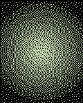
Prečo je kyberia zelená?drienka :: ::graphics::design::photo :: 29.09.Fosforové monitory, terminály, Matrix, alebo len náhoda pri prvom CSS v roku 2001? Pýtal som sa troch ľudí, čo boli pri tom, a dostal som štyri odpovede. Zbieram teórie aj dôkazy, staré screenshoty a zálohy šablón sú vítané.